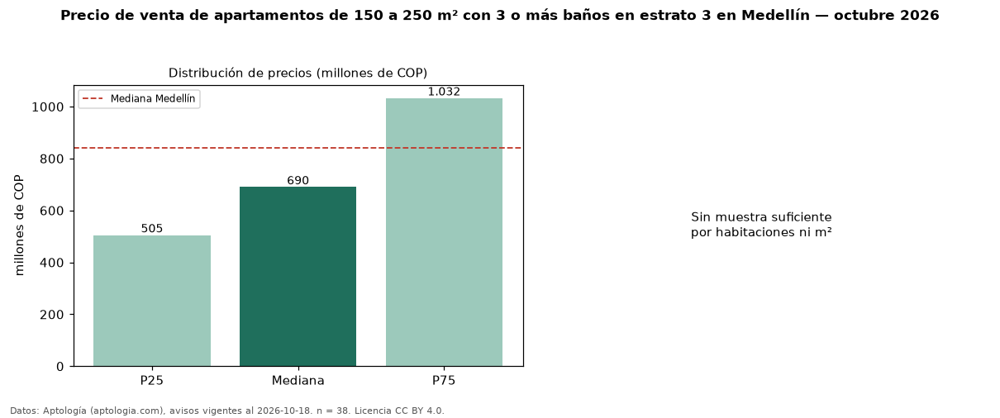

Precio de venta de apartamentos de 150 a 250 m² con 3 o más baños en estrato 3 en Medellín — octubre 2026
Con 38 avisos vigentes, el precio mediano de apartamentos de 150 a 250 m² con 3 o más baños en estrato 3 en venta en Medellín es COP 690 millones. Frente a la mediana de los apartamentos de 150 a 250 m² en estrato 3 en venta de Medellín (COP 550 millones, n = 70), queda 25 % por encima; este segmento reúne el 54 % de esos avisos. El área mediana anunciada es 184 m². El segmento con más oferta es el de 3 o más habitaciones (36 avisos, mediana COP 600 millones). La mitad central de los avisos va de COP 505 millones a COP 1,03 mil millones (razón 2,0), una dispersión alta. La mediana de todos los apartamentos en venta de Medellín es COP 840 millones (−18 % de diferencia). Datos: Aptología (aptologia.com), CC BY 4.0 — https://www.aptologia.com/venta/medellin. Archivos: PDF, CSV con las cifras y gráfica PNG.

| Avisos únicos | 38 |
|---|---|
| Percentil 25 | COP 505.000.000 |
| Mediana | COP 690.000.000 |
| Percentil 75 | COP 1.032.500.000 |
Fuente: avisos vigentes de portales inmobiliarios recopilados por Aptología, deduplicados (mínimo 30 avisos únicos por celda). Precios pedidos, no cerrados. Fecha: 2026-10-18.